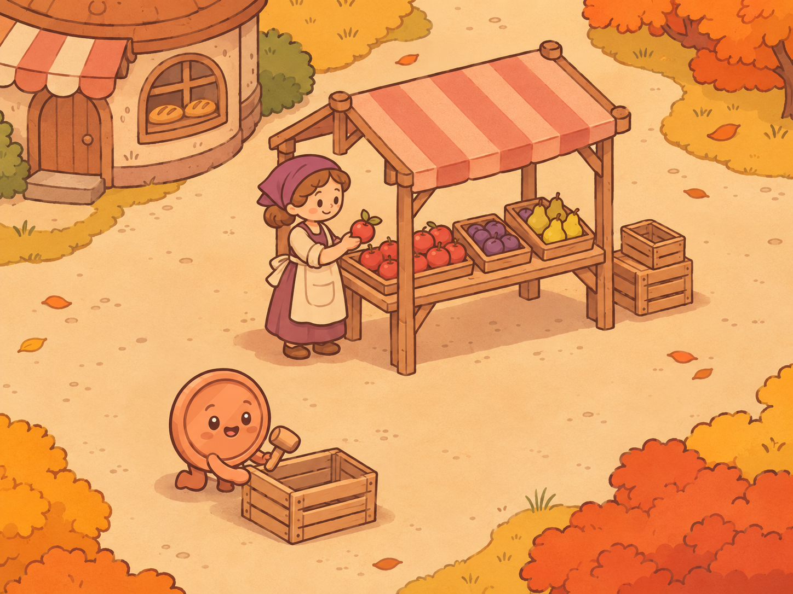

<!doctype html>
<html lang="pl">
<meta charset="utf-8">
<meta name="viewport" content="width=device-width, initial-scale=1">
<title>Groszaki · animacja rynku v8</title>
<style>
  body { margin: 0; background: #fff7e6; color: #573c2a; font: 16px/1.5 system-ui; }
  main { max-width: 780px; margin: auto; padding: 16px; }
  h1 { font: 700 26px Georgia, serif; }
  img, canvas { display: block; width: 100%; height: auto; border-radius: 12px; }
  [hidden] { display: none; }
  button { font: inherit; padding: 8px; }
  .mobile { max-width: 390px; }
  label { display: inline-block; margin: 6px 12px 6px 0; }
</style>
<main>
  <h1>Rynek Groszaków · v8</h1>
  <div id="view">
    
    <canvas id="scene" width="1448" height="1086" hidden aria-label="Piekarz i klientka idą przez rynek, dwa Groszaki niosą skrzynki, trzeci naprawia skrzynkę, a sprzedawczyni odkłada jabłko."></canvas>
  </div>
  <button id="play" disabled>Odtwórz próbę</button>
  <p id="status" role="status"></p>
  <label><input id="mobile" type="checkbox"> Podgląd 390 px</label>
</main>
<script type="module">
  const mobile = document.getElementById('mobile');
  const view = document.getElementById('view');
  mobile.addEventListener('change', () => view.classList.toggle('mobile', mobile.checked));
</script>
<script type="module" src="./src/groszaki/rynek-v8.js"></script>
</html>
